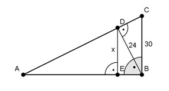

Pythagoras Aufgabe 83 Berechnen Sie die Länge der Strecke x in mm. Alle Maße in mm.

Satz von Pythagoras im Dreieck DBC BC2 = BD2 + DC2 | -BD2 DC2 = BC2 - BD2 DC2 = 302 mm2 - 242 mm2 = 324 mm2 |√ DC = 18 mm Höhensatz im Dreieck ABC: BD2 = AD * DC |:DC BD2 AD = ----- DC 242 AD = ----- 18 AD = 32 mm Satz von Pythagoras im Dreieck ABD: AB2 = BD2 + AD2 AB2 = 242 mm2 + 322 mm2 = 1 600 mm2 |√ AB = 40 mm Kathetensatz im Dreieck ABD: BD2 = AB * EB | :AB BD2 EB = ----- AB 242 EB = ----- 40 EB = 14,4 mm Satz von Pythagoras im Dreieck EBD: ED2 = x2 + EB2 |-EB2 x2 = ED2 - EB2 x2 = 242 mm2 - 14,42 mm2 = 368,6 mm2 |√ x = 19,2 mm